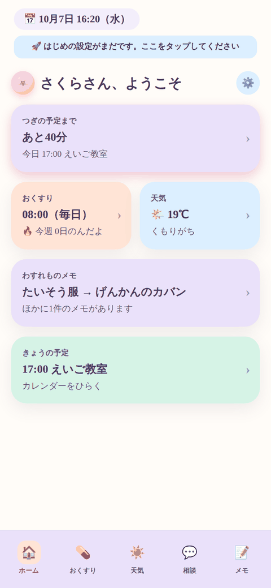

まいにちサポート ／ セットアップの流れ
設定は2つのパートに分かれています。
第1部は、外部サービスの準備（3手順・1時間ほど）。ご家庭のアカウントで動かすための作業で、最初の1回だけです。この一手間があるおかげで、お子様の会話や予定を開発者が見られない形になります。
第2部は、アプリの中でお子さんに合わせる設定（8項目・15分ほど）。外部サービスの登録はありません。

設定がまだのときは、アプリのホーム画面の上に「はじめの設定がまだです」の案内が出ます。 この案内が消えれば、第1部と、第2部の必須2項目が終わった合図です。
最初の1回だけの作業です。保護者の方のスマホかパソコンで進めてください。
そうだんチャットのAIを動かすための「APIキー」を発行します。前払いのチャージ制で、5ドルから始められます。使いすぎ防止の上限も設定します。
用意するもの: クレジットカード
ガイドを開く →
ご家庭専用のLINE公式アカウントを作り、通知を担当する小さなプログラム(Worker)を用意します。いちばん手数が多いところですが、ここが終われば「れんらく」や「あそび許可」の通知が届くようになります。手順1で控えたAPIキーもここで使います。
用意するもの: LINEアカウント / 手順1のAPIキー
ガイドを開く →
ご家庭のGoogleカレンダーの予定を、アプリに表示できるようにします。アプリでGoogleにログインするだけなので、いちばん簡単です。
用意するもの: Googleアカウント
ガイドを開く →
ここからはアプリの中の操作だけです。お子さんの端末で、⚙️ →「🚀 やることの一覧を見る」を開いて進めます。
アプリに第1部で用意した2つの値を入れ、iPhoneの許可を済ませます。そのうえで、呼ばれ方・学年・家族の呼び名・天気の地域・目立つお知らせ・好きなもののメモを、お子さんに合わせて決めます。バックアップとアプリの更新のしかたもこのページにあります。
用意するもの: お子さんの端末 / 第1部で控えた2つの値
ガイドを開く →
| 手順 | できるようになること | 誰のアカウントを使うか |
|---|---|---|
| 1. AIチャット | そうだんチャット、服装アドバイス、あそび許可の判断 | ご家庭のアカウント |
| 2. LINEと通知 | れんらくスタンプ、家族へのメモ、あそび許可の通知 | ご家庭のアカウント |
| 3. カレンダー | ホーム画面とカレンダー画面への予定の表示 | ご家庭のアカウント |
| 4. お子さんに合わせる | 呼ばれ方・学年に合った言葉づかい、家族の呼び名、天気の地域、目立つお知らせ、好きなもののメモ | アプリの中だけ（外部サービスなし） |
| (設定不要) | 天気、服装アドバイスの気温データ | 開発者のアカウント |
天気だけは、開発者があらかじめ用意した中継サーバーとアカウントで動きます。位置情報から天気を調べるだけで、お子様の記録や会話とは関係のない部分のため、設定の手間をなくしています。この部分だけは、おおよその位置(約1kmの精度に丸めたもの)が開発者の中継サーバーを通ります。詳しくはプライバシーポリシーをご覧ください。